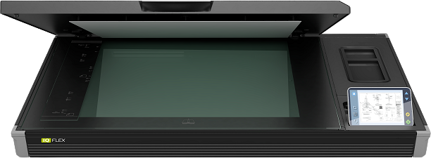
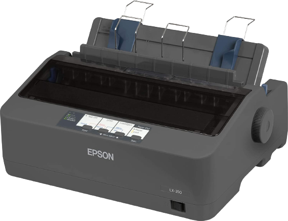

Imprimanta face parte din categoria perifericelor de ieşire, aceasta fiind utilizată pentru transpunerea informaţiei din calculator pe hârtie (un document, o poză sau orice altfel de fişier grafic, un e-mail, un articol etc.). Imprimantele se clasează după mai multe criterii, de exemplu în funcţie de scop (imprimare/tipărire) şi de rapiditate, de procedeu, de dimensiunile maxime ale hârtiei pe care se imprimă şi altele.
Imprimantele pot imprima pe hârtie de dimensiuni diferite, de la A0 – numai plottere (imprimante de dimensiuni mai mari folosite în general de firme pentru scheme CAD, afişe etc) şi până la plicuri, fotografii etc.
Tipuri de imprimante:
- imprimanta matricială: (sau „cu ace”) oferă o calitate scăzută; este folosită pentru foi de calitate scăzută, facturi fiscale etc. (în general documente tip), fiind singurul tip de imprimantă care permite imprimarea simultană a 2 sau 3 exemplare, folosind hârtie autocopiativă.
- imprimantă cu jet de cerneală: oferă o calitate medie înspre ridicată, la o viteză medie; este folosită pentru documente, fotografii sau fişiere grafice.
- imprimantă laser: oferă o calitate ridicată la viteză înaltă; foloseşte un toner special
- imprimantă cu imprimare termică: foloseşte o hârtie specială; este utilizată pentru legitimaţii, carduri etc.

În domeniul computerelor, un scaner este o unitate periferică de intrare, care scanează optic (= sondează, explorează prin baleiaj, linie cu linie şi punct cu punct) imagini analogice, texte tipărite sau chiar şi obiecte reale şi produce ca rezultat o imagine digitală în 2D. Se foloseşte pe scară largă în birouri, cel mai des sub forma unui aparat de pus pe masa de lucru, plat, cu "pat" de sticlă pe care se plasează documentul sau obiectul de scanat.
Imprimanta multifuncţională este de fapt un ansamblu format dintr-o imprimantă, scanner şi copiator. Multifuncţionalele moderne se bazează în general pe tehnologie laser, dar şi cele cu jet de cerneală sunt la fel de răspândite, în special din cauza discrepanţei dintre preţuri.
|  |

|